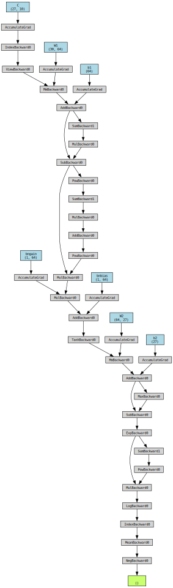
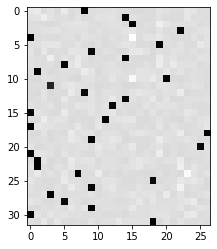

# there no change change in the first several cells from last lecturemakemore: becoming a backprop ninja
swole doge style
import torch
import torch.nn.functional as F
import matplotlib.pyplot as plt # for making figures
%matplotlib inline# read in all the words
words = open('names.txt', 'r').read().splitlines()
print(len(words))
print(max(len(w) for w in words))
print(words[:8])32033
15
['emma', 'olivia', 'ava', 'isabella', 'sophia', 'charlotte', 'mia', 'amelia']# build the vocabulary of characters and mappings to/from integers
chars = sorted(list(set(''.join(words))))
stoi = {s:i+1 for i,s in enumerate(chars)}
stoi['.'] = 0
itos = {i:s for s,i in stoi.items()}
vocab_size = len(itos)
print(itos)
print(vocab_size){1: 'a', 2: 'b', 3: 'c', 4: 'd', 5: 'e', 6: 'f', 7: 'g', 8: 'h', 9: 'i', 10: 'j', 11: 'k', 12: 'l', 13: 'm', 14: 'n', 15: 'o', 16: 'p', 17: 'q', 18: 'r', 19: 's', 20: 't', 21: 'u', 22: 'v', 23: 'w', 24: 'x', 25: 'y', 26: 'z', 0: '.'}
27# build the dataset
block_size = 3 # context length: how many characters do we take to predict the next one?
def build_dataset(words):
X, Y = [], []
for w in words:
context = [0] * block_size
for ch in w + '.':
ix = stoi[ch]
X.append(context)
Y.append(ix)
context = context[1:] + [ix] # crop and append
X = torch.tensor(X)
Y = torch.tensor(Y)
print(X.shape, Y.shape)
return X, Y
import random
random.seed(42)
random.shuffle(words)
n1 = int(0.8*len(words))
n2 = int(0.9*len(words))
Xtr, Ytr = build_dataset(words[:n1]) # 80%
Xdev, Ydev = build_dataset(words[n1:n2]) # 10%
Xte, Yte = build_dataset(words[n2:]) # 10%torch.Size([182625, 3]) torch.Size([182625])
torch.Size([22655, 3]) torch.Size([22655])
torch.Size([22866, 3]) torch.Size([22866])# ok biolerplate done, now we get to the action:# utility function we will use later when comparing manual gradients to PyTorch gradients
def cmp(s, dt, t):
ex = torch.all(dt == t.grad).item()
app = torch.allclose(dt, t.grad)
maxdiff = (dt - t.grad).abs().max().item()
print(f'{s:15s} | exact: {str(ex):5s} | approximate: {str(app):5s} | maxdiff: {maxdiff} | shapes: {dt.shape} vs. {t.shape}')n_embd = 10 # the dimensionality of the character embedding vectors
n_hidden = 64 # the number of neurons in the hidden layer of the MLP
g = torch.Generator().manual_seed(2147483647) # for reproducibility
C = torch.randn((vocab_size, n_embd), generator=g)
# Layer 1
W1 = torch.randn((n_embd * block_size, n_hidden), generator=g) * (5/3)/((n_embd * block_size)**0.5)
b1 = torch.randn(n_hidden, generator=g) * 0.1 # using b1 just for fun, it's useless because of BN
# Layer 2
W2 = torch.randn((n_hidden, vocab_size), generator=g) * 0.1
b2 = torch.randn(vocab_size, generator=g) * 0.1
# BatchNorm parameters
bngain = torch.randn((1, n_hidden))*0.1 + 1.0
bnbias = torch.randn((1, n_hidden))*0.1
# Note: I am initializating many of these parameters in non-standard ways
# because sometimes initializating with e.g. all zeros could mask an incorrect
# implementation of the backward pass.
parameters = [C, W1, b1, W2, b2, bngain, bnbias]
parameters_named = dict(
C=C,
W1=W1,
b1=b1,
W2=W2,
b2=b2,
bngain=bngain,
bnbias=bnbias,
)
print(sum(p.nelement() for p in parameters)) # number of parameters in total
for p in parameters:
p.requires_grad = True4137batch_size = 32
n = batch_size # a shorter variable also, for convenience
# construct a minibatch
ix = torch.randint(0, Xtr.shape[0], (batch_size,), generator=g)
Xb, Yb = Xtr[ix], Ytr[ix] # batch X,Y# forward pass, "chunkated" into smaller steps that are possible to backward one at a time
emb = C[Xb] # embed the characters into vectors
embcat = emb.view(emb.shape[0], -1) # concatenate the vectors
# Linear layer 1
hprebn = embcat @ W1 + b1 # hidden layer pre-activation
# BatchNorm layer
bnmeani = 1/n*hprebn.sum(0, keepdim=True)
bndiff = hprebn - bnmeani
bndiff2 = bndiff**2
bnvar = 1/(n-1)*(bndiff2).sum(0, keepdim=True) # note: Bessel's correction (dividing by n-1, not n)
bnvar_inv = (bnvar + 1e-5)**-0.5
bnraw = bndiff * bnvar_inv
hpreact = bngain * bnraw + bnbias
# Non-linearity
h = torch.tanh(hpreact) # hidden layer
# Linear layer 2
logits = h @ W2 + b2 # output layer
# cross entropy loss (same as F.cross_entropy(logits, Yb))
logit_maxes = logits.max(1, keepdim=True).values
norm_logits = logits - logit_maxes # subtract max for numerical stability
counts = norm_logits.exp()
counts_sum = counts.sum(1, keepdims=True)
counts_sum_inv = counts_sum**-1 # if I use (1.0 / counts_sum) instead then I can't get backprop to be bit exact...
probs = counts * counts_sum_inv
logprobs = probs.log()
loss = -logprobs[range(n), Yb].mean()
# PyTorch backward pass
for p in parameters:
p.grad = None
for t in [logprobs, probs, counts, counts_sum, counts_sum_inv, # afaik there is no cleaner way
norm_logits, logit_maxes, logits, h, hpreact, bnraw,
bnvar_inv, bnvar, bndiff2, bndiff, hprebn, bnmeani,
embcat, emb]:
t.retain_grad()
loss.backward()
losstensor(3.3390, grad_fn=<NegBackward0>)from torchviz import make_dot
make_dot(loss, params=parameters_named)
# Exercise 1: backprop through the whole thing manually,
# backpropagating through exactly all of the variables
# as they are defined in the forward pass above, one by one
dlogprobs = torch.zeros_like(logprobs)
# get all rows, and index into the correct column for the labels
dlogprobs[range(n), Yb] = -1/n
dprobs = dlogprobs * 1 / probs
dcounts_sum_inv = (dprobs * counts).sum(1, keepdim=True)
dcounts_sum = dcounts_sum_inv * -counts_sum**-2
dcounts = counts_sum_inv * dprobs
# gradients flow through other vertex!
dcounts += dcounts_sum * 1
dnorm_logits = dcounts * norm_logits.exp()
dlogit_maxes = (-dnorm_logits).sum(1, keepdim=True)
dlogits = dnorm_logits.clone()
dlogits += F.one_hot(logits.max(1).indices, num_classes=logits.shape[1]) * dlogit_maxes
dh = dlogits @ W2.T
dW2 = h.T @ dlogits
db2 = dlogits.sum(0)
dhpreact = dh * (1 - h**2)
dbngain = (dhpreact * bnraw).sum(0, keepdim=True)
dbnbias = dhpreact.sum(0, keepdim=True)
dbnraw = dhpreact * bngain
dbnvar_inv = (dbnraw * bndiff).sum(0, keepdim=True)
dbndiff = bnvar_inv * dbnraw
dbnvar = dbnvar_inv * -.5 * (bnvar + 1e-5)**-1.5
dbndiff2 = torch.ones_like(bndiff2) * 1 / (n-1) * dbnvar
dbndiff += (2*bndiff) * dbndiff2
dhprebn = dbndiff.clone()
dbnmeani = (-dbndiff).sum(0, keepdim=True)
dhprebn += dbnmeani * torch.ones_like(hprebn) * 1 / n
dembcat = dhprebn @ W1.T
dW1 = embcat.T @ dhprebn
db1 = dhprebn.sum(0)
demb = torch.ones_like(emb) * dembcat.view(n, 3, -1)
dC = torch.zeros_like(C)
for k in range(Xb.shape[0]):
for j in range(Xb.shape[1]):
ix = Xb[k,j]
dC[ix] += demb[k,j]
cmp('logprobs', dlogprobs, logprobs)
cmp('probs', dprobs, probs)
cmp('counts_sum_inv', dcounts_sum_inv, counts_sum_inv)
cmp('counts_sum', dcounts_sum, counts_sum)
cmp('counts', dcounts, counts)
cmp('norm_logits', dnorm_logits, norm_logits)
cmp('logit_maxes', dlogit_maxes, logit_maxes)
cmp('logits', dlogits, logits)
cmp('h', dh, h)
cmp('W2', dW2, W2)
cmp('b2', db2, b2)
cmp('hpreact', dhpreact, hpreact)
cmp('bngain', dbngain, bngain)
cmp('bnbias', dbnbias, bnbias)
cmp('bnraw', dbnraw, bnraw)
cmp('bnvar_inv', dbnvar_inv, bnvar_inv)
cmp('bnvar', dbnvar, bnvar)
cmp('bndiff2', dbndiff2, bndiff2)
cmp('bndiff', dbndiff, bndiff)
cmp('bnmeani', dbnmeani, bnmeani)
cmp('hprebn', dhprebn, hprebn)
cmp('embcat', dembcat, embcat)
cmp('W1', dW1, W1)
cmp('b1', db1, b1)
cmp('emb', demb, emb)
cmp('C', dC, C)logprobs | exact: True | approximate: True | maxdiff: 0.0 | shapes: torch.Size([32, 27]) vs. torch.Size([32, 27])
probs | exact: True | approximate: True | maxdiff: 0.0 | shapes: torch.Size([32, 27]) vs. torch.Size([32, 27])
counts_sum_inv | exact: True | approximate: True | maxdiff: 0.0 | shapes: torch.Size([32, 1]) vs. torch.Size([32, 1])
counts_sum | exact: True | approximate: True | maxdiff: 0.0 | shapes: torch.Size([32, 1]) vs. torch.Size([32, 1])
counts | exact: True | approximate: True | maxdiff: 0.0 | shapes: torch.Size([32, 27]) vs. torch.Size([32, 27])
norm_logits | exact: True | approximate: True | maxdiff: 0.0 | shapes: torch.Size([32, 27]) vs. torch.Size([32, 27])
logit_maxes | exact: True | approximate: True | maxdiff: 0.0 | shapes: torch.Size([32, 1]) vs. torch.Size([32, 1])
logits | exact: True | approximate: True | maxdiff: 0.0 | shapes: torch.Size([32, 27]) vs. torch.Size([32, 27])
h | exact: True | approximate: True | maxdiff: 0.0 | shapes: torch.Size([32, 64]) vs. torch.Size([32, 64])
W2 | exact: True | approximate: True | maxdiff: 0.0 | shapes: torch.Size([64, 27]) vs. torch.Size([64, 27])
b2 | exact: True | approximate: True | maxdiff: 0.0 | shapes: torch.Size([27]) vs. torch.Size([27])
hpreact | exact: True | approximate: True | maxdiff: 0.0 | shapes: torch.Size([32, 64]) vs. torch.Size([32, 64])
bngain | exact: True | approximate: True | maxdiff: 0.0 | shapes: torch.Size([1, 64]) vs. torch.Size([1, 64])
bnbias | exact: True | approximate: True | maxdiff: 0.0 | shapes: torch.Size([1, 64]) vs. torch.Size([1, 64])
bnraw | exact: True | approximate: True | maxdiff: 0.0 | shapes: torch.Size([32, 64]) vs. torch.Size([32, 64])
bnvar_inv | exact: True | approximate: True | maxdiff: 0.0 | shapes: torch.Size([1, 64]) vs. torch.Size([1, 64])
bnvar | exact: True | approximate: True | maxdiff: 0.0 | shapes: torch.Size([1, 64]) vs. torch.Size([1, 64])
bndiff2 | exact: True | approximate: True | maxdiff: 0.0 | shapes: torch.Size([32, 64]) vs. torch.Size([32, 64])
bndiff | exact: True | approximate: True | maxdiff: 0.0 | shapes: torch.Size([32, 64]) vs. torch.Size([32, 64])
bnmeani | exact: True | approximate: True | maxdiff: 0.0 | shapes: torch.Size([1, 64]) vs. torch.Size([1, 64])
hprebn | exact: True | approximate: True | maxdiff: 0.0 | shapes: torch.Size([32, 64]) vs. torch.Size([32, 64])
embcat | exact: True | approximate: True | maxdiff: 0.0 | shapes: torch.Size([32, 30]) vs. torch.Size([32, 30])
W1 | exact: True | approximate: True | maxdiff: 0.0 | shapes: torch.Size([30, 64]) vs. torch.Size([30, 64])
b1 | exact: True | approximate: True | maxdiff: 0.0 | shapes: torch.Size([64]) vs. torch.Size([64])
emb | exact: True | approximate: True | maxdiff: 0.0 | shapes: torch.Size([32, 3, 10]) vs. torch.Size([32, 3, 10])
C | exact: True | approximate: True | maxdiff: 0.0 | shapes: torch.Size([27, 10]) vs. torch.Size([27, 10])# Exercise 2: backprop through cross_entropy but all in one go
# to complete this challenge look at the mathematical expression of the loss,
# take the derivative, simplify the expression, and just write it out
# forward pass
# before:
# logit_maxes = logits.max(1, keepdim=True).values
# norm_logits = logits - logit_maxes # subtract max for numerical stability
# counts = norm_logits.exp()
# counts_sum = counts.sum(1, keepdims=True)
# counts_sum_inv = counts_sum**-1 # if I use (1.0 / counts_sum) instead then I can't get backprop to be bit exact...
# probs = counts * counts_sum_inv
# logprobs = probs.log()
# loss = -logprobs[range(n), Yb].mean()
# now:
loss_fast = F.cross_entropy(logits, Yb)
print(loss_fast.item(), 'diff:', (loss_fast - loss).item())3.3377387523651123 diff: 2.384185791015625e-07# backward pass
dlogits = F.softmax(logits, 1)
dlogits[range(n), Yb] -= 1
dlogits /= n
cmp('logits', dlogits, logits) # I can only get approximate to be true, my maxdiff is 6e-9logits | exact: False | approximate: True | maxdiff: 5.122274160385132e-09logits.shape, Yb.shape(torch.Size([32, 27]), torch.Size([32]))F.softmax(logits, 1)[0]tensor([0.0719, 0.0881, 0.0193, 0.0493, 0.0169, 0.0864, 0.0226, 0.0356, 0.0165,
0.0314, 0.0364, 0.0383, 0.0424, 0.0279, 0.0317, 0.0142, 0.0085, 0.0195,
0.0152, 0.0555, 0.0450, 0.0236, 0.0250, 0.0662, 0.0616, 0.0269, 0.0239],
grad_fn=<SelectBackward0>)dlogits[0] * ntensor([ 0.0719, 0.0881, 0.0193, 0.0493, 0.0169, 0.0864, 0.0226, 0.0356,
-0.9835, 0.0314, 0.0364, 0.0383, 0.0424, 0.0279, 0.0317, 0.0142,
0.0085, 0.0195, 0.0152, 0.0555, 0.0450, 0.0236, 0.0250, 0.0662,
0.0616, 0.0269, 0.0239], grad_fn=<MulBackward0>)dlogits[0].sum()tensor(1.3970e-09, grad_fn=<SumBackward0>)plt.figure(figsize=(4, 4))
plt.imshow(dlogits.detach(), cmap='gray')
# Exercise 3: backprop through batchnorm but all in one go
# to complete this challenge look at the mathematical expression of the output of batchnorm,
# take the derivative w.r.t. its input, simplify the expression, and just write it out
# forward pass
# before:
# bnmeani = 1/n*hprebn.sum(0, keepdim=True)
# bndiff = hprebn - bnmeani
# bndiff2 = bndiff**2
# bnvar = 1/(n-1)*(bndiff2).sum(0, keepdim=True) # note: Bessel's correction (dividing by n-1, not n)
# bnvar_inv = (bnvar + 1e-5)**-0.5
# bnraw = bndiff * bnvar_inv
# hpreact = bngain * bnraw + bnbias
# now:
hpreact_fast = bngain * (hprebn - hprebn.mean(0, keepdim=True)) / torch.sqrt(hprebn.var(0, keepdim=True, unbiased=True) + 1e-5) + bnbias
print('max diff:', (hpreact_fast - hpreact).abs().max())max diff: tensor(4.7684e-07, grad_fn=<MaxBackward1>)# backward pass
# before we had:
# dbnraw = bngain * dhpreact
# dbndiff = bnvar_inv * dbnraw
# dbnvar_inv = (bndiff * dbnraw).sum(0, keepdim=True)
# dbnvar = (-0.5*(bnvar + 1e-5)**-1.5) * dbnvar_inv
# dbndiff2 = (1.0/(n-1))*torch.ones_like(bndiff2) * dbnvar
# dbndiff += (2*bndiff) * dbndiff2
# dhprebn = dbndiff.clone()
# dbnmeani = (-dbndiff).sum(0)
# dhprebn += 1.0/n * (torch.ones_like(hprebn) * dbnmeani)
# calculate dhprebn given dhpreact (i.e. backprop through the batchnorm)
# (you'll also need to use some of the variables from the forward pass up above)
cmp('hprebn', dhprebn, hprebn) # I can only get approximate to be true, my maxdiff is 9e-10hprebn | exact: False | approximate: True | maxdiff: 9.313225746154785e-10dhprebn.shape, bngain.shape, bnvar_inv.shape, dbnraw.shape, dbnraw.sum(0).shape(torch.Size([32, 64]),
torch.Size([1, 64]),
torch.Size([1, 64]),
torch.Size([32, 64]),
torch.Size([64]))# Exercise 4: putting it all together!
# Train the MLP neural net with your own backward pass
# init
n_embd = 10 # the dimensionality of the character embedding vectors
n_hidden = 200 # the number of neurons in the hidden layer of the MLP
g = torch.Generator().manual_seed(2147483647) # for reproducibility
C = torch.randn((vocab_size, n_embd), generator=g)
# Layer 1
W1 = torch.randn((n_embd * block_size, n_hidden), generator=g) * (5/3)/((n_embd * block_size)**0.5)
b1 = torch.randn(n_hidden, generator=g) * 0.1
# Layer 2
W2 = torch.randn((n_hidden, vocab_size), generator=g) * 0.1
b2 = torch.randn(vocab_size, generator=g) * 0.1
# BatchNorm parameters
bngain = torch.randn((1, n_hidden))*0.1 + 1.0
bnbias = torch.randn((1, n_hidden))*0.1
parameters = [C, W1, b1, W2, b2, bngain, bnbias]
print(sum(p.nelement() for p in parameters)) # number of parameters in total
for p in parameters:
p.requires_grad = True
# same optimization as last time
max_steps = 200000
batch_size = 32
n = batch_size # convenience
lossi = []
# use this context manager for efficiency once your backward pass is written (TODO)
with torch.no_grad():
# kick off optimization
for i in range(max_steps):
# minibatch construct
ix = torch.randint(0, Xtr.shape[0], (batch_size,), generator=g)
Xb, Yb = Xtr[ix], Ytr[ix] # batch X,Y
# forward pass
emb = C[Xb] # embed the characters into vectors
embcat = emb.view(emb.shape[0], -1) # concatenate the vectors
# Linear layer
hprebn = embcat @ W1 + b1 # hidden layer pre-activation
# BatchNorm layer
# -------------------------------------------------------------
bnmean = hprebn.mean(0, keepdim=True)
bnvar = hprebn.var(0, keepdim=True, unbiased=True)
bnvar_inv = (bnvar + 1e-5)**-0.5
bnraw = (hprebn - bnmean) * bnvar_inv
hpreact = bngain * bnraw + bnbias
# -------------------------------------------------------------
# Non-linearity
h = torch.tanh(hpreact) # hidden layer
logits = h @ W2 + b2 # output layer
loss = F.cross_entropy(logits, Yb) # loss function
# backward pass
for p in parameters:
p.grad = None
#loss.backward() # use this for correctness comparisons, delete it later!
# manual backprop! #swole_doge_meme
# -----------------
dlogits = F.softmax(logits, 1)
dlogits[range(n), Yb] -= 1
dlogits /= n
# 2nd layer backprop
dh = dlogits @ W2.T
dW2 = h.T @ dlogits
db2 = dlogits.sum(0)
# tanh
dhpreact = (1.0 - h**2) * dh
# batchnorm backprop
dbngain = (bnraw * dhpreact).sum(0, keepdim=True)
dbnbias = dhpreact.sum(0, keepdim=True)
dhprebn = bngain*bnvar_inv/n * (n*dhpreact - dhpreact.sum(0) - n/(n-1)*bnraw*(dhpreact*bnraw).sum(0))
# 1st layer
dembcat = dhprebn @ W1.T
dW1 = embcat.T @ dhprebn
db1 = dhprebn.sum(0)
# embedding
demb = dembcat.view(emb.shape)
dC = torch.zeros_like(C)
for k in range(Xb.shape[0]):
for j in range(Xb.shape[1]):
ix = Xb[k,j]
dC[ix] += demb[k,j]
grads = [dC, dW1, db1, dW2, db2, dbngain, dbnbias]
# -----------------
# update
lr = 0.1 if i < 100000 else 0.01 # step learning rate decay
for p, grad in zip(parameters, grads):
#p.data += -lr * p.grad # old way of cheems doge (using PyTorch grad from .backward())
p.data += -lr * grad # new way of swole doge TODO: enable
# track stats
if i % 10000 == 0: # print every once in a while
print(f'{i:7d}/{max_steps:7d}: {loss.item():.4f}')
lossi.append(loss.log10().item())
# if i >= 100: # TODO: delete early breaking when you're ready to train the full net
# break12297
0/ 200000: 3.7805
10000/ 200000: 2.1775
20000/ 200000: 2.3957
30000/ 200000: 2.5032
40000/ 200000: 2.0065
50000/ 200000: 2.3873
60000/ 200000: 2.3378
70000/ 200000: 2.0640
80000/ 200000: 2.3497
90000/ 200000: 2.1093
100000/ 200000: 1.9132
110000/ 200000: 2.2229
120000/ 200000: 1.9912
130000/ 200000: 2.4441
140000/ 200000: 2.3198
150000/ 200000: 2.1857
160000/ 200000: 2.0296
170000/ 200000: 1.8391
180000/ 200000: 2.0436
190000/ 200000: 1.9200# useful for checking your gradients
# for p,g in zip(parameters, grads):
# cmp(str(tuple(p.shape)), g, p)# calibrate the batch norm at the end of training
with torch.no_grad():
# pass the training set through
emb = C[Xtr]
embcat = emb.view(emb.shape[0], -1)
hpreact = embcat @ W1 + b1
# measure the mean/std over the entire training set
bnmean = hpreact.mean(0, keepdim=True)
bnvar = hpreact.var(0, keepdim=True, unbiased=True)# evaluate train and val loss
@torch.no_grad() # this decorator disables gradient tracking
def split_loss(split):
x,y = {
'train': (Xtr, Ytr),
'val': (Xdev, Ydev),
'test': (Xte, Yte),
}[split]
emb = C[x] # (N, block_size, n_embd)
embcat = emb.view(emb.shape[0], -1) # concat into (N, block_size * n_embd)
hpreact = embcat @ W1 + b1
hpreact = bngain * (hpreact - bnmean) * (bnvar + 1e-5)**-0.5 + bnbias
h = torch.tanh(hpreact) # (N, n_hidden)
logits = h @ W2 + b2 # (N, vocab_size)
loss = F.cross_entropy(logits, y)
print(split, loss.item())
split_loss('train')
split_loss('val')train 2.070523500442505
val 2.109893560409546# I achieved:
# train 2.0718822479248047
# val 2.1162495613098145# sample from the model
g = torch.Generator().manual_seed(2147483647 + 10)
for _ in range(20):
out = []
context = [0] * block_size # initialize with all ...
while True:
# ------------
# forward pass:
# Embedding
emb = C[torch.tensor([context])] # (1,block_size,d)
embcat = emb.view(emb.shape[0], -1) # concat into (N, block_size * n_embd)
hpreact = embcat @ W1 + b1
hpreact = bngain * (hpreact - bnmean) * (bnvar + 1e-5)**-0.5 + bnbias
h = torch.tanh(hpreact) # (N, n_hidden)
logits = h @ W2 + b2 # (N, vocab_size)
# ------------
# Sample
probs = F.softmax(logits, dim=1)
ix = torch.multinomial(probs, num_samples=1, generator=g).item()
context = context[1:] + [ix]
out.append(ix)
if ix == 0:
break
print(''.join(itos[i] for i in out))carmahzamille.
khi.
mreigeet.
khalaysie.
mahnen.
delynn.
jareen.
nellara.
chaiiv.
kaleigh.
ham.
joce.
quinn.
shoison.
jadiquintero.
dearyxi.
jace.
pinsley.
dae.
iia.